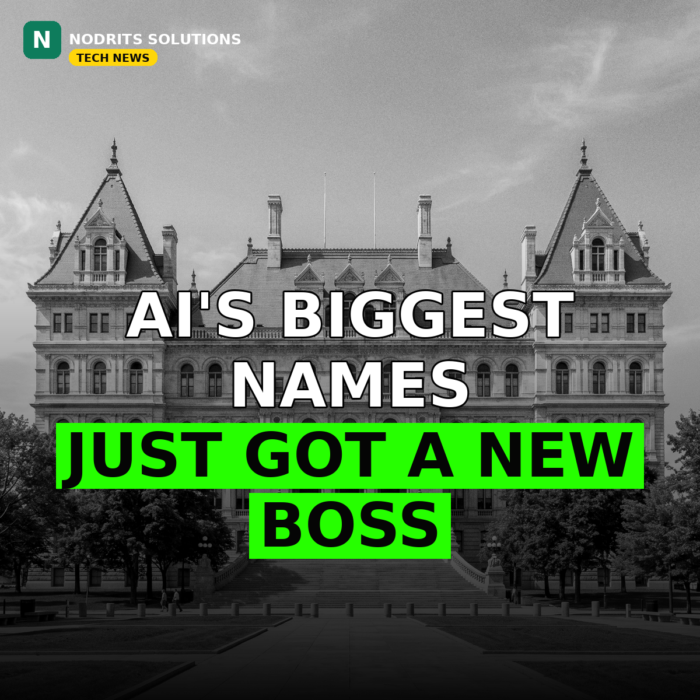

New York Switches On AI Safety Enforcement: Frontier Labs Must Register by January 1

New York has switched on the enforcement machinery for one of the toughest AI safety laws in the United States. On Tuesday, November 10, the state opened a registration portal for its Responsible AI Safety and Education (RAISE) Act — and the world's biggest AI labs, including OpenAI and Anthropic, now have until January 1, 2027 to register, publish their safety frameworks, and start reporting critical safety incidents within 72 hours. A brand-new state office will police compliance, and a single violation can cost up to $1 million.
What happened
The RAISE Act, signed by Governor Kathy Hochul in December 2025 and amended in March 2026, applies to large frontier AI developers — companies with more than $500 million in annual revenue whose models are developed, deployed or operating in New York. From January 1, 2027, those developers must publish safety frameworks on their websites, report critical safety incidents to the state within 72 hours, and issue public model transparency reports. The state opened the registration portal on Tuesday, November 10, and labs must be registered by the January 1 deadline. Enforcement will sit with a newly formed Office of Digital Innovation, Governance, Integrity, and Trust (DIGIT), which can bring actions against companies that fail to register. Penalties can reach $1 million for a single violation and $3 million for subsequent violations. Hochul also launched the New York Center for AI Responsibility and Research, based at the State University of New York's Binghamton University, which will independently evaluate the safety, security and operation of advanced AI systems and work with DIGIT to review companies' safety frameworks. The center was first announced in January with $55 million in donations and capital.
Why it matters
New York is now the second US state with a frontier AI safety law on the books, after California's SB 53, which took effect in January 2026 and requires labs to publish safety frameworks, protect whistleblowers and report critical incidents within 15 days. Illinois passed a similar law, SB 315, which takes effect at the start of 2027 and adds independent safety compliance audits. Together the three states are building what OpenAI has called a de facto national framework for frontier AI — and New York's 72-hour incident reporting window is the strictest of the three. For the labs, the practical effect is immediate: safety frameworks that were voluntary commitments are becoming public, auditable documents, and incident response now runs on a three-day clock.
What it means for you
If you build products on top of frontier models, expect the ripple effects to reach you: published safety frameworks will make it clearer what the big labs will — and won't — allow, and faster incident reporting should mean faster disclosure when something goes wrong with a model you depend on. If you run a business in New York, watch the companion laws too: the state already enforces a rule requiring AI companion operators to tell users they are talking to a bot and to detect signs of suicidal ideation or self-harm, and a separate chatbot safety law for minors signed in October takes effect on June 1, 2027, restricting deceptive human-like interactions and emotionally manipulative responses.
The Nodrits take
Regulation this concrete was unthinkable two years ago — and now three US states have it, with real fines attached. The open question is whether a 72-hour reporting clock and public safety frameworks actually make frontier AI safer, or simply add paperwork while the race continues. What do you think — is New York setting the standard the rest of the world will follow, or will the labs just route around it? Tell us in the comments.
Need a website, SaaS product or AI workflow built right?
Nodrits Solutions designs, develops and automates for businesses in Pakistan, the USA, UK, UAE and Saudi Arabia.
Talk to Nodrits →Sources: TechCrunch (November 10, 2026) — New York opened the RAISE Act registration portal, created the DIGIT enforcement office, and launched the New York Center for AI Responsibility and Research. Governor Kathy Hochul's press briefing, November 10, 2026.. Published November 11, 2026.